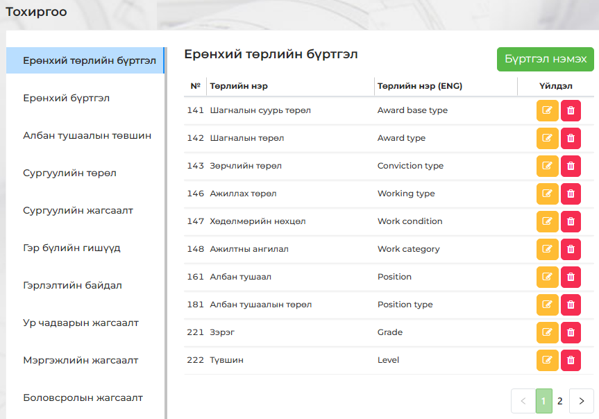

Энэхүү системийн тохиргооны хэсэг нь Ерөнхий бүртгэл, сургууль болон гэр бүлийн гишүүдийн мэдээлэл, ур чадвар, мэргэжил зэрэг үндсэн цэсүүдээс бүрдэх бөгөөд эдгээр цэсүүдэд харгалзах утгуудыг зөв тохируулж өгөх нь чухал юм.
